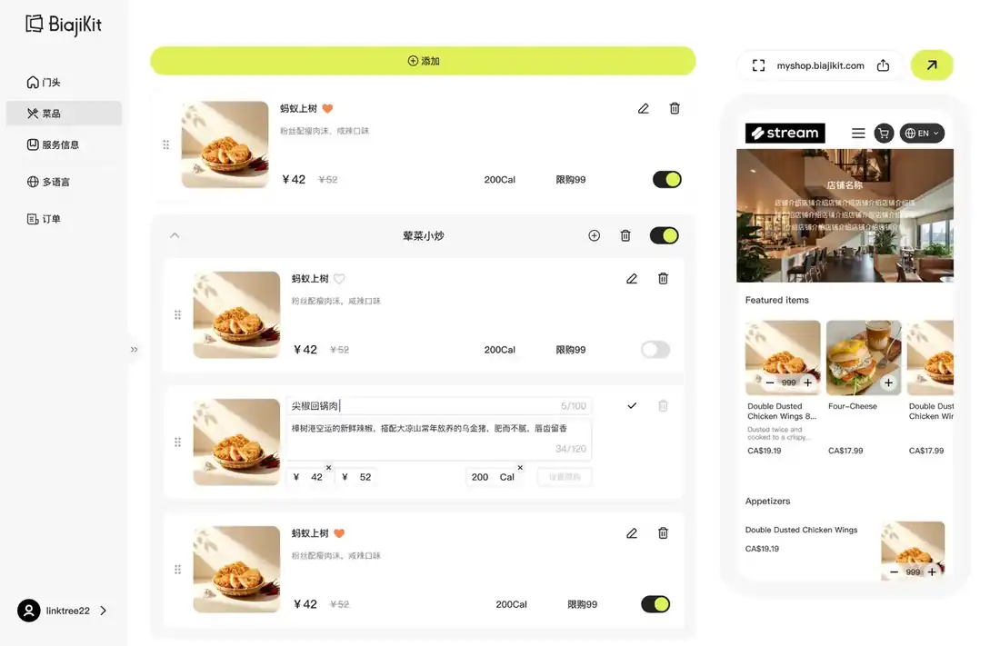
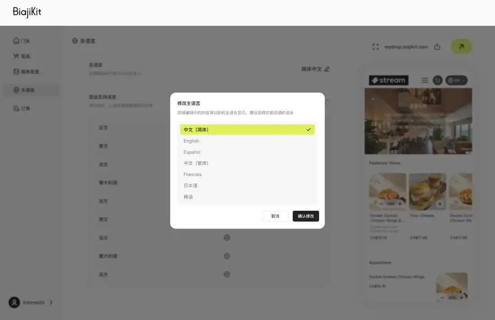
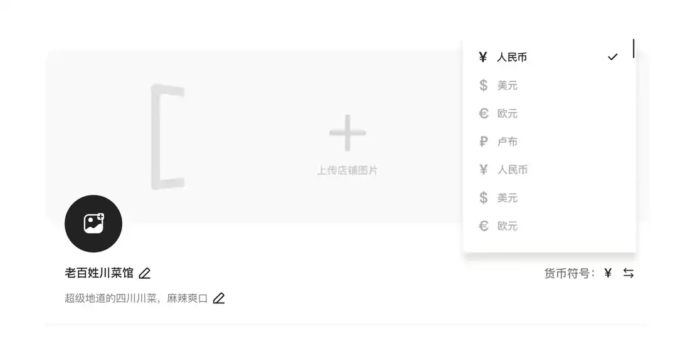
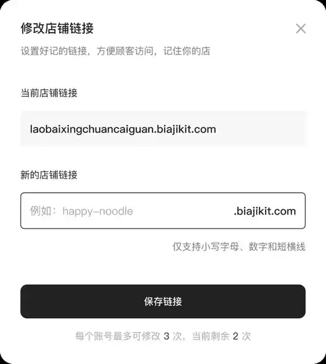
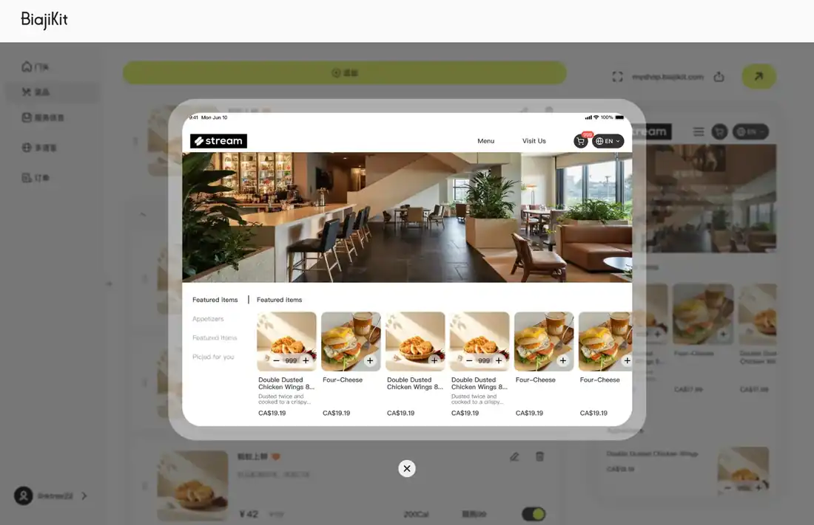
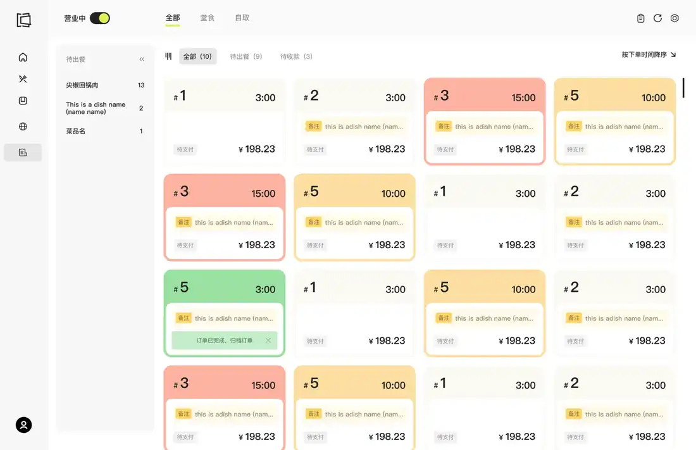
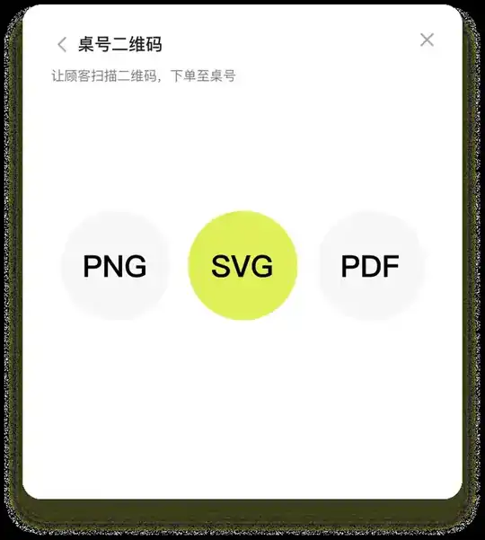

01 / PRODUCT
0→1 productization
Defined the MVP and decomposed the end-to-end flow into independently developable modules.
AI-powered Restaurant Website Generation
I led the 0→1 product definition of an AI-native restaurant SaaS MVP, turning model capabilities and engineering constraints into a modular workflow from menu input to a publishable, multilingual customer site.

Defined the MVP and decomposed the end-to-end flow into independently developable modules.
Structured output fields, test sets and quantitative criteria for parsing and generation.
Structured store, menu, service, payment and business information for downstream AI experiences.






The product separates AI-heavy steps from deterministic editing and publishing so each part can be evaluated, retried and iterated independently.